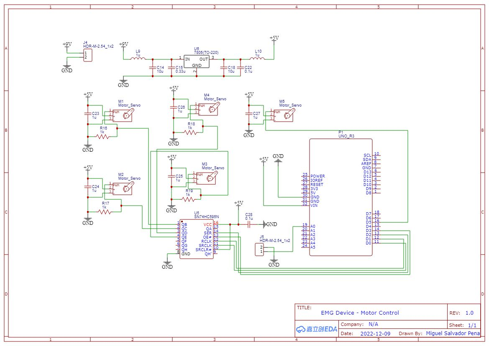
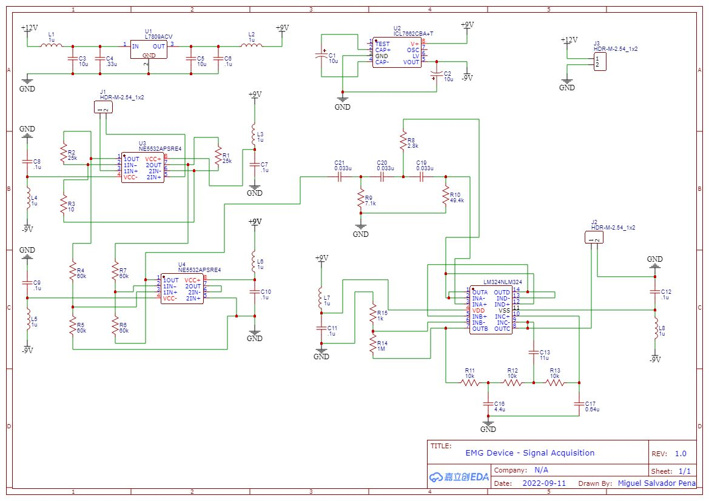
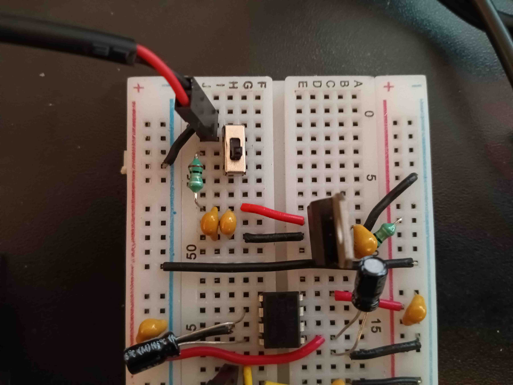
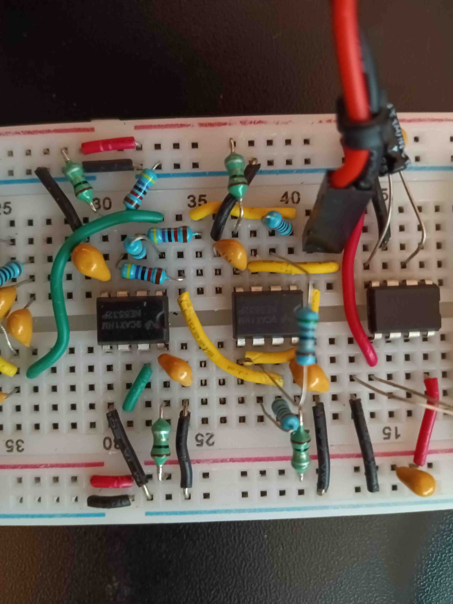
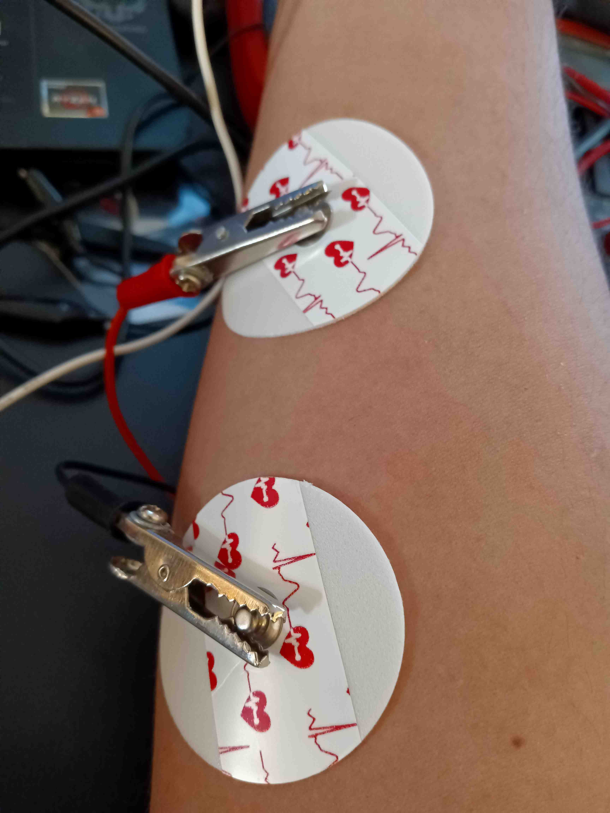
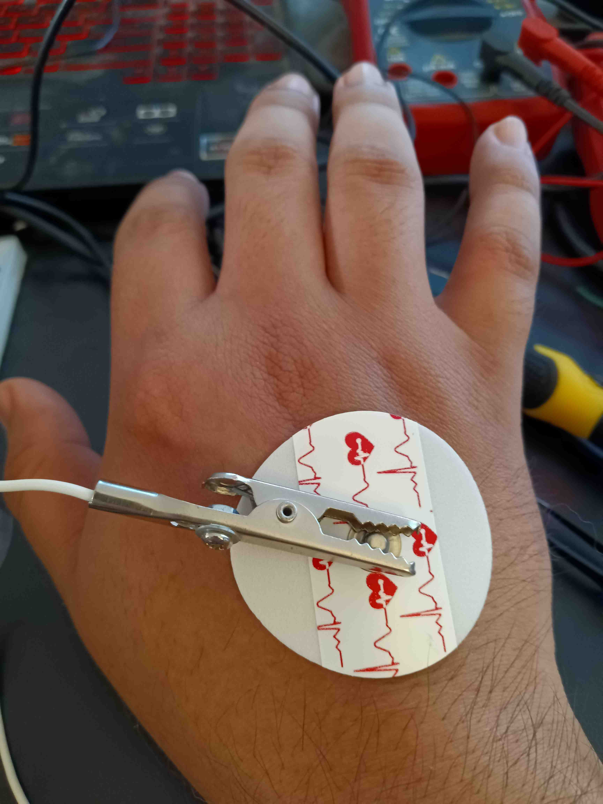
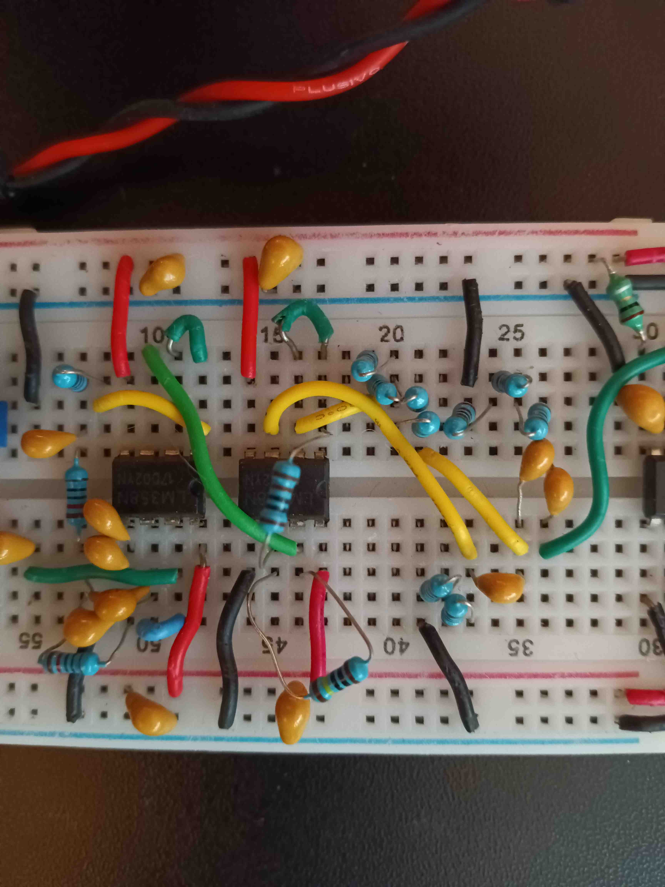
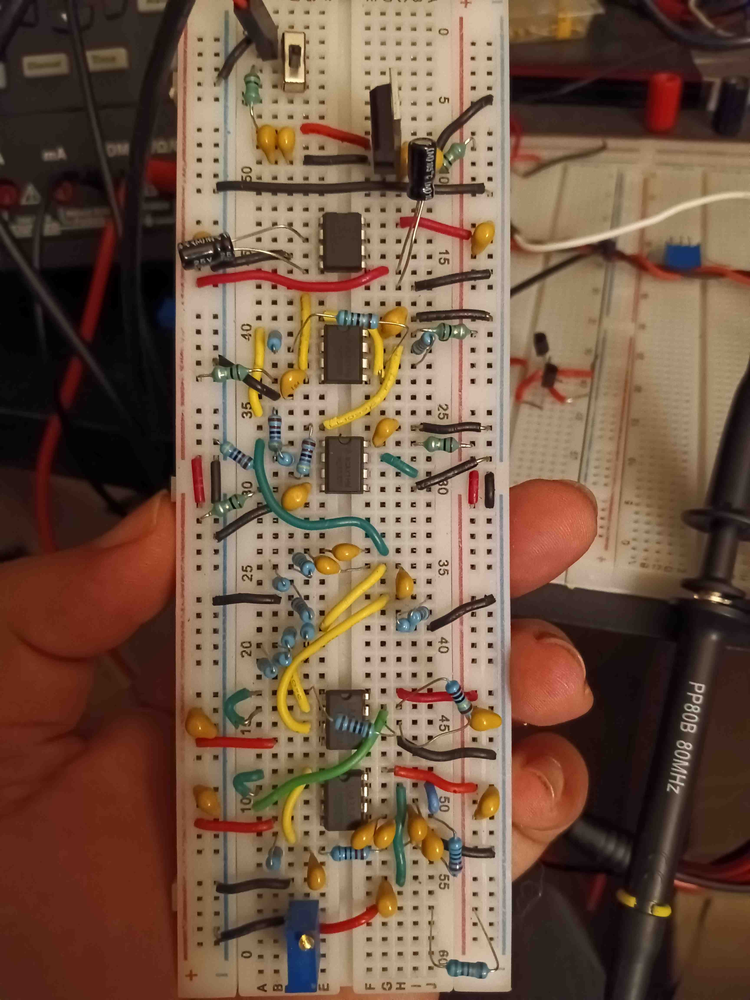
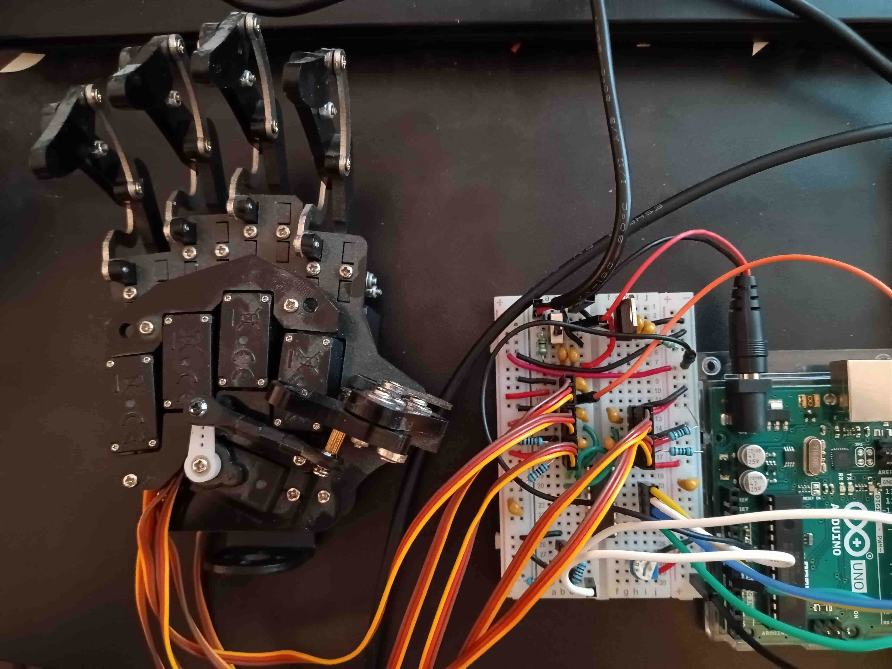

A Work in Progress
Capstone project consisting of several functional parts. The robot hand built with FreeCAD CAD Software, printed with Creality Ender 3, and assembled with servo motors from preassembled robot hand (in progress, placeholder is robot hand purchased from Amazon). EMG signal acquisition hardware, circuit designed with EasyEDA software (an Electronics Design Automation tool), assembled on breadboard, and signals acquired by Arduino Uno. Software developed with Arduino IDE . The electrodes were purchased from Amazon as part of an ECG kit, since building from scratch was beyond the scope.
 Circuit Designed with EasyEDA
As a biomedical engineer, I have a formal education relating to biomedical signal acquisition and processing. This includes signals such electrocardiography (ECG[min 3 leads] and EKG[multileads]), electromyography (EMG), electroencephalography (EEG), and electrooculography (EOG). I have deep understanding of complex concepts such as the fourier transform, radon transform, filtering, convolutions, sampling frequency, and other advanced electrical engineering concepts relating to digital and analog signal processing. Therefore, I demonstrate herein my ability to design and implement an EMG analog signal acquisition circuit, analog to digital conversion (ADC), and servo motor control with digital signals. Having a prior experience of building an ECG signal acquisition and processing device, I set out to design and implement such a circuit to control a robot hand with an EMG signal.
The main problem I encountered was dealing with negative voltages, so I decided to use the ICL7662 IC to convert a regulated +9V supply to a switch mode +/-9V rail. I later found out that this was not ideal, since there was significant noise in the power rails. I added some 1 uH inductors, and it helped reduce the high frequency noise that I encountered. I would update the circuit design as I went along, instead of performing simulations, since I felt like most simulations assume ideal components, which I definitely did not have with my limited budget.
The final circuit, which provided steady +/- 9V rails is shown above. An AC adapter that supplied 12V at 1A was utilized for powering the circuit. I could have avoided the headaches by simply hooking up two 9V batteries in such a way that it would supply the same rails, but I felt confident that the current (if any) through my body (in this case my forearm) would not be deadly. I do not recommend this circuit for ECG (or any circuit with electrodes on opposite side of the body), since that will be deadly, even with an apparent DC current, since we still have the high frequency AC noise.
The next problem encountered was the need for an instrumentation amplifier, where I was taught to utilize the INA118 for the ECG circuit; however, I did not have the budget or time to obtain a specialized opamp for this circuit. I decided to go for the next best thing, which was to create my own based the circuit diagram provided in the INA118 datasheet. I had to ensure that the resistors were matched for a decent, but not great, common mode rejection ratio (CMRR). I also had to make sure that the wires were as short as possible, and the gain sufficient enough to have a decent, but not great, signal to noise ratio (SNR). I used my only available, low-noise opamps: NE5532; which in hindsight, was probably not a good idea, but it worked out okay. In an attempt to improve the power supply rejection ratio (PSRR) of my opamps, I added some 1 uH inductors to the power supply inputs, this would ensure that only DC could pass through due to the higher impedances seen by higher frequencies. I think this eventually led to the death of my opamps, but I'm getting ahead of myself.
I noticed that I would get a clean 60Hz signal at the end of my instrumentation amplifier, but could not pin point the cause until I got myself a fancy handheld oscilliscope. I got myself into more debt, but it was worth it. As it turned out, I somehow forgot that EMG signal acquisition must be done with a grounded reference, along with the two primary wires connected to the muscle of interest, along the fibers. We humans act as a wet antennae that can pick up the 60 Hz signal from the mains power supply in our homes, so that's precisely what I saw when I connected just two wires to my muscle. As soon as I connected a reference wire to the ground on the back of my hand, I immediatly saw the 60Hz signal flatten.
  The true EMG signal was now showing up on my oscilliscope, but it was noisy and moving about. This called for the addition of a high pass filter, for removing low frequency noise that causes offseting, and a low pass filter for removing high frequency noise, especially from the power supply. However, I quickly found out that I cannot simply apply the two filters at the same time, since the EMG signal immediately disappeared after applying the third order filters (reason for overkill of resistors and capacitors). I kept looking into it, and decided to apply a buffer between the two filters followed by an amplification stage. It worked to my surprise, since the output voltage would swing according to my muscle flexing. The final problem encountered with the circuit was the fact that the signal lay somewhere between -2V to 3V, and I needed it to be within the safe range of 0 to 5V. I added a simple DC offset to the end of the circuit. In hindsight, I could have used a 5.1V zener diode in order to ensure safe usage of the ADC in the Arduino Uno, but I learned about that several days after I had disassembled the circuit for storage. In the following video, I left the oscilloscope probe just before the DC offset, so it still shows the terrible negative voltage that could easily fry the Arduino's ADC.
Finally, the motor control circuit was the easiest to implement, and had only a single problem. That problem was a sudden problem with the motors not functioning properly. I later found out that the SN74HC595N was fried by the fact that I moved the motors while debugging, and how I tried using the serial monitor whilst using the dedicated pins (Universal Asynchronous Receiver Transmitter [UART] requires pins 0 and 1 to be unused, not something I knew then). After replacing the chip and reprogramming the arduino, I was able to determine the ideal integer range (read from analog pin) for the robot hand movement, and have it close whenever I would clench my fist. The neat part about this circuit is that I am able to control all five servo motors at the same time, which shows that I know about robotics too.
Technology Utilized
- FreeCAD CAD Software
- Creality Ender 3 3D Printer with PLA Filament
- EasyEDA software for circuit design
- Arduino UNO programmed with Arduino IDE